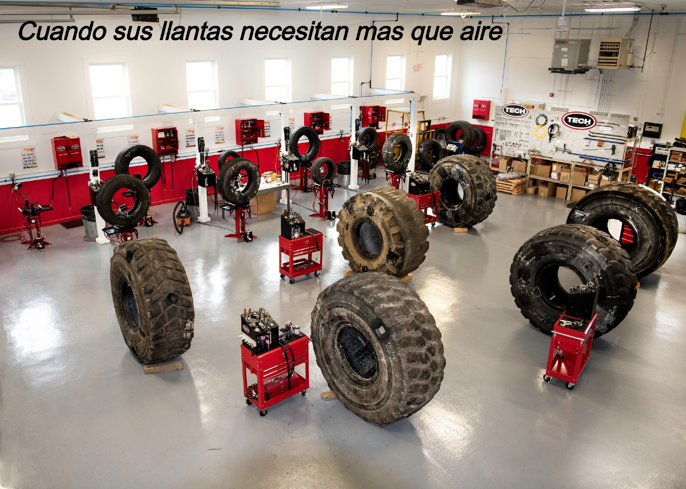
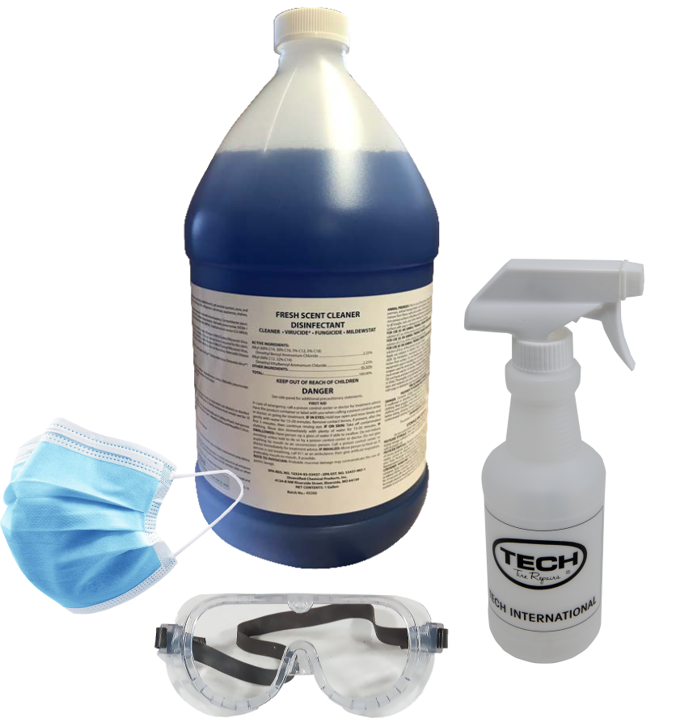
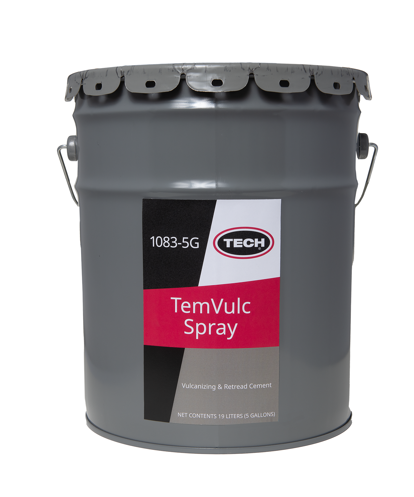
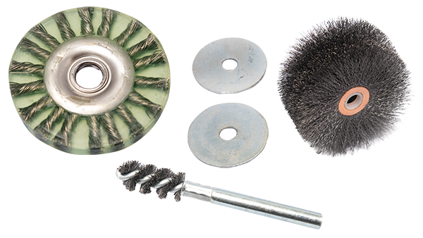

TECH es la autoridad mundial de neumáticos y ruedas que revolucionó la industria
con la creación de tecnología de vulcanización en frío. Ese legado de innovación
continúa hoy con la línea de productos de reparación de neumáticos y servicio de
ruedas de clase mundial de TECH. La línea completa de reparaciones, herramientas
y equipos de TECH les permite a los técnicos de todo el mundo hacer que todo,
desde automóviles de pasajeros hasta camiones comerciales, vuelva a funcionar.
TECNOLOGÍA ...
¡La confianza de los técnicos de la Autoridad mundial de neumáticos y ruedas!
1 / 6

Vea la nueva línea de equipos de protección personal de TECH.
- Desinfectantes
- Limpiador de manos
- Máscaras, gafas y anteojos
- Guantes
- Botellas de spray
2 / 6

Kit de inicio de piezas de repuesto TECH TPMS (64 piezas)
¡Agilice la gestión de su inventario con el
kit de inicio de piezas de repuesto TPMS de TECH!
- Cubre los vehículos más populares.
- Total de 64 válvulas y kits de servicio de sensores TPMS
3 / 6

Cemento en aerosol TemVulc (5 galones)
- La adherencia superior
garantiza la máxima adhesión
y un mejor rendimiento de
reparación de neumáticos. - Amplio rango de temperatura
de curado (210 ° F a 320 ° F). - Fluido vulcanizante negro tipo
spray y cemento recauchutado para
sistemas de curado por calor. - Proporciona una excelente adhesión
cuando se usa con cualquier reparación
de Thermacure o Vul-Gum de TECH.
4 / 6

Compuesto de montaje de neumáticos TECH negro
- Lubricante de montaje de
neumáticos no dispersable en agua,
libre de petróleo y retardador de óxido - Recomendado para ruedas,
tubos de neumáticos y aplicaciones
de quinta rueda. - Detiene la unión o congelación de los
cordones de los neumáticos
a la llanta, lo que permite una fácil extracción. - Excelente estabilidad de temperatura;
varía de -20 ° F a 100 ° F (-28.9 ° C a 37.8 ° C)
5 / 6

Cepillos TECH
- Productos de alta calidad
- Operar a temperaturas más frías
- Menos deformación permite una mayor
vida útil del cepillo
6 / 6

Sensor híbrido TECH 2.0 TPMS
- Doble banda de 315 MHz y 433 MHz
- 97% de cobertura del vehícul
- Configurable y programable: tecnología híbrida
- Válvulas intercambiables de presión y abrazadera
- Construido según especificaciones OEM
- Programacion Inalámbrica
- Clonable
- Funcionalidad de ubicación automática para LOS, WAL, PAL
- 3 años Garantía del sensor
- 7 años Batería Maxell